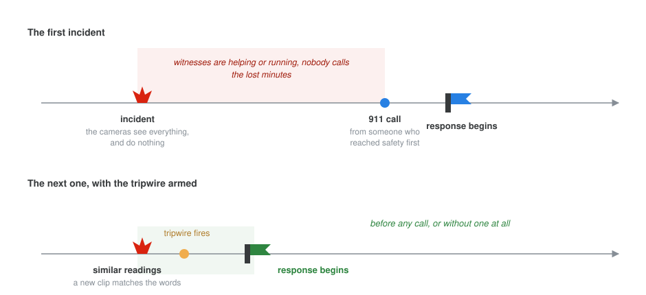
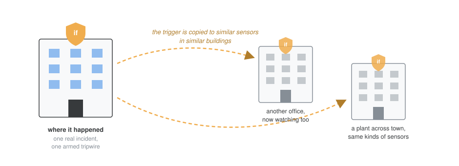

The Tripwire Patent
Picture an explosion in a parking garage. The people nearby do exactly what you would hope. Two of them drag a man clear of the smoke, one starts CPR, the rest run for safety. Nobody calls 911, because everyone who saw it has their hands full or is getting out. The call comes minutes later, from a woman who dialed once she felt safe. Those are long minutes in an emergency.
The garage had cameras. They recorded everything from the first frame, and they did nothing with it, because a camera has no way of knowing that what it just saw is worth summoning a fire brigade. The usual fix is to pre-program alarm systems to detect specific events, and that works only for the events someone thought to predefine. The ones nobody imagined in advance are exactly the ones that slip through.
This is the problem my patent goes after. It was granted this May as US 12,634,398 B2 (grant PDF), and the invention won Motorola’s internal Patent of the Year award in 2022.
Let the call teach the sensors
The idea is to use the 911 call, when it finally arrives, to teach the nearby sensors what mattered.
When the call comes in, the system finds the sensors that could have seen the incident and pulls what they recorded around that time and place, including the minutes before. Software then distills that recording into something small and checkable. The concrete version we walk through in the filing: image recognition reduces the incident video to a set of words, {explosion, fire, car, people, scream}.
From that summary the system arms what we called an alarm-escalating trigger. It has two parts. A condition, written in the sensors’ own vocabulary: a new clip whose summary shares at least four of those five words. And a response staged in advance for that kind of incident: notify the responders’ radios, alert the 911 call taker, open the emergency doors, sound the sirens.
![Five-panel storyboard. Panel one, a 911 call reports the incident. Panel two, sensors near that time and place hand over what they recorded. Panel three, software distills the footage into the words explosion, fire, car, people, scream. Panel four, a tripwire is armed with the condition that a new clip matches at least four of the five words, plus a staged response: notify responders' radios, alert the call taker, open emergency doors, sound sirens. Panel five, later footage meets the condition and the workflow fires without anyone calling.](mechanism-flow.svg)
Then the sensors watch. If a later clip meets the condition, the staged response fires. No one has to call.

That second timeline is the whole point. The first incident pays the cost of human judgement, one real 911 call, and converts it into a machine-checkable description of what an emergency looks like at this place. It is the payoff we wrote into the filing: the next time, a proper response can start before any notification from a witness, or without one at all.
Why I find it elegant
A tripwire armed this way is narrow on purpose. It is tied to a place, to a kind of incident, and to sensor readings that accompanied a real emergency. The camera is never asked to decide what an emergency is in general, which is the version of the problem nobody knows how to solve. It is asked whether what it sees now resembles the thing a human already declared an emergency, and that is just a similarity check.
The wire also does not have to stay where it was laid. The trigger can be copied to similar sensors in similar buildings, an office tower, a plant with the same smart-building sensors, so a lesson learned once arms tripwires in many places. We sketched the far end of this in the filing too: the accumulated incidents and their sensor readings become training data for a model that learns which readings deserve a response.

This was joint work with my co-inventors Emmy Beltre, Kaveh Malakuti and Mariya Bondareva at Motorola Solutions. Filed September 2023, granted May 2026. The word set, the response actions and the garage-style scenario above are the examples we put in the patent itself.